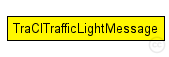

This documentation is released under the Creative Commons license
This documentation is released under the Creative Commons licenseNOTE: Currently only supports changes of the IDs (due to variation in field types)
The following diagram shows usage relationships between types. Unresolved types are missing from the diagram.
The following diagram shows inheritance relationships for this type. Unresolved types are missing from the diagram.
| Name | Type | Description |
|---|---|---|
| tlId | string |
traffic light id |
| changedAttribute | int |
what field/attrbute of the traffic light changed? |
| oldValue | string |
value before the change |
| newValue | string |
value that is to be set / was newly set |
| changeSource | int |
where did the change originate |
// NOTE: Currently only supports changes of the IDs (due to variation in field types) message TraCITrafficLightMessage { // traffic light id string tlId; // what field/attrbute of the traffic light changed? int changedAttribute @enum(TrafficLightAtrributeType); // value before the change string oldValue; // value that is to be set / was newly set string newValue; // where did the change originate int changeSource @enum(TrafficLightChangeSource); }
This documentation is released under the Creative Commons license